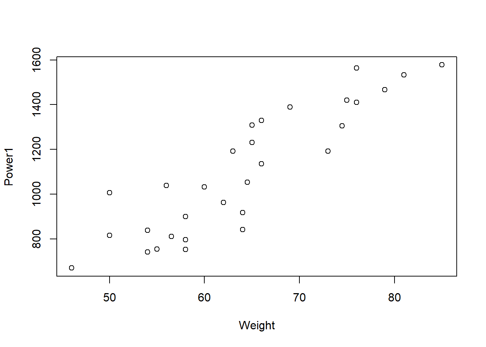

2 Example 1: Correlation
In an experiment conducted by the GU physiology department, a sample of volunteers had their power output measured (in watts) while they ran up stairs as fast as possible under different test conditions. Their gender was noted and their weight and leg length measurements recorded. The data are available from the csv file phys1.csv. To open this data file in RStudio type:
phys <- read.csv("phys1.csv")This will assign the data to the object phys. This worksheet contains six columns, described as follows:
C2: Weight (kgs)
C3: Leg Length (metres)
C4: Power1: Power output in the stair test
C5: Power2: Power output in a test with a ramp on the stairs
C6: Power3: Power output with ramp on the stairs and a fixed stride length
You can view these names by typing names(phys).
2.1 Exploratory analysis
QUESTION: Produce a scatterplot to examine the relationship between Power1 and Weight.
plot(Power1 ~ Weight, data = phys)
Producing labelled scatterplots
The simple scatterplot may have ignored the possibility that any relationship between these variables might be different for males and females. So, we now label the plot according to the gender of the subjects. The following provides one approach to doing this in RStudio.
The variable Gender within the data is a factor with two levels: Male and Female. Firstly, we will create a character variable for Gender, by using the command:
Gender1 <- as.character(phys$Gender)We can now use this new object to label the points by gender. This can be done by typing the following:
plot(Power1 ~ Weight, data = phys, xlab = "Weight (kgs)", ylab = "Power Output (Watts)",
pch = Gender1)which produces the scatterplot given in Figure 2.1.
Figure 2.1: Scatterplot of Power1 versus Weight with gender highlighted.
DISCUSSION: What can we say about the relationship between Power1 and Weight for males and females separately?
The plotting characters (as well as colour) highlighting males and females can also be chosen using numerical characters in R. For example,
Gender2 <- as.numeric(phys$Gender)2.2 Population correlation hypothesis test
Here we would like to assess the strength of the relationship, if any, between Power1 and Weight. We are going to do this for male and female volunteers separately, such that we assess the statistical significance of the observed correlation between these two variables in the wider populations of (i) males and (ii) females.
Firstly, we subset the data for males and females. One way to do this is:
physM <- subset(phys, Gender == "Male", data = phys)
physF <- subset(phys, Gender == "Female", data = phys)We now perform, separately for males and females, the following hypothesis test:
We test the null hypothesis, \(H_0\), that is, that in the population of males/females the correlation between Power Output and Weight is 0 against the alternative hypothesis, \(H_1\), that the correlation is not equal to 0.
To compute the sample correlation coefficient, \(r\), and perform our hypothesis test, we use the cor.test command. For the males data, the command is as follows:
cor.test(physM$Power1, physM$Weight)Note: in the cor.test command the $ notation is required to access the variables from the subsetted data.
The hypothesis test produces a \(p\)-value, where we reject the null hypothesis, \(H_0\), for small values of the \(p\)-value (typically \(p\)-values \(< 0.05\)). It also produces a 95% confidence interval for a range of plausible values for the true population correlation.
QUESTION:
What is the sample correlation coefficient for the males data?
What is the \(p\)-value for the test?
The sample correlation coefficient tells us that Power Output and Weight for males have a , , relationship.
Based on the \(p\)-value of the test, we would and conclude that \(\rho\) .
Now repeat the hypothesis test for the females data.
QUESTION:
What is the sample correlation coefficient for the females data?
What is the \(p\)-value for the test?
The sample correlation coefficient tells us that Power Output and Weight for females have a , , relationship.
Based on the \(p\)-value of the test, we would and conclude that \(\rho\) .
Note: if we do not subset the data by gender, we obtain a sample correlation coefficient \(r = 0.89\), with a \(p\)-value \(\leq 0.05\), and thus we would conclude that there is a strong, positive linear relationship between Power Output and Weight. However, we now know that is not the case for females.
2.3 Calculating the correlation by hand
To compute the sample correlation coefficient, \(r\), the command cor.test uses the formula given in (1.2). To check that the cor.test command is ‘correct’, we can ourselves calculate the correlation directly
using the following commands:
var # computes the variance of a given vector
cov # computes the covariance between the vectors x and y
sum # returns the sum of the values given
mean # computes the mean of a given vector
sqrt # computes the square-root of a given vectorTASK 1: Give your answers to 3 decimal places where required.
- Using the commands
varandcov, compute the variance and covariance given in (1.1) for the males data, where \(Y\) denotes the response variable Power Output, and \(X\) denotes the explanatory variable Weight.
The variance of the response variable Power Output is .
The covariance of the response and explanatory variables is .
- Using the variance and covariance obtained in (a), and the square-root command,
sqrt, compute the sample correlation coefficient using the formula given in (1.1) for the males data. Does this match what was obtained using thecor.testcommand?
This the sample correlation coefficient found using
cor.test.- Use the
mean,sum, andsqrtcommands to compute the sum of squares, \(S_{xx}\) and \(S_{yy}\), and the sum of products, \(S_{xy}\), given in formula (1.2) for the males data.
\(S_{yy}\):
\(S_{xy}\):
- Use the sum of squares and sum of products obtained in (c) to compute the sample correlation coefficient, \(r\), using formula (1.2) for the males data. Does this match your answer from (b) and the
cor.testcommand?
cor.test.